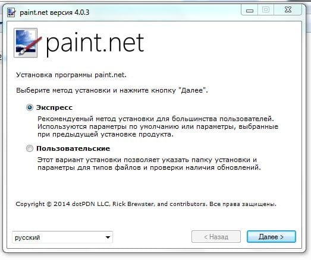

Paint.Net – это совершенно новейший, графический редактор, определенный специально для устройств, которые работают на устройствах с системой Windows. Программа выделяется среди иных в своем роде уникальной простотой, но опять же имеет хорошо продуманный и достаточно широкий функционал, и в частности может обрабатывать как простые фотографии, так и просторными, в виде 3D-рисунков.

Приложение Paint.Net обладает следующими способностями:
- Работа со слоями.
— Отображение цветовых гамм.
— Употребление «волшебной палочки».
— Потенциал изменения окраски, контраста, прибавлять эффекты.
— Моделирование 3D рисунков.
Несмотря на совсем маленький размер приложения, она способна отрабатывать даже такие рисунки, вес каких захватывает десятки или сотни мегабайт – тут все зависит только от способностей вашего компьютера, а также объёма жесткого диска. Данное приложение также без сложностей обрабатывает и редактирует 3D – рисунки, используя при этом исключительно основные элементы, для изменения рисунков в пространстве.
Скачать бесплатно на Русском Paint net:
Системные требования программы Paint.net:
- Windows 7 - Windows XP SP2
- или Windows Vista
- Проц. 800 МГц (желательно двухъядерный)
- ОЗУ от 512 МБ
- 200 МБ свободного места на жестком диске
Внимание! Для корректной работы программы необходим NET Framework 3.5 SP1 но не стоит сразу искать и устанавливать его, после запуска программы будет проверка на наличие необходимых компонентов и если у вас версия старенькая то программа предложит установить, нажимаем ок (см. скриншот 1) и ждем конца установки NET Framework (см. скриншот 2).
Скриншот 1
Скриншот 2
Классно
удалил.
Если и эта версия будет жаловаться на то, что на моём компе не win7 — я удалю её с огромной злостью >_<
Работает только на 7 винде, хотя написано что поддерживает и ХР
а ха ха у нево експи
eta superr
У меня не доходит до конца (скрин 2) пишет, что нужен инет, а я скачивала на планшете, на компе инета нет. Если способ установить без инета?
без инэта не как, если только не скачать у знакомого с компьютера.
А как закачаешь программу,вирусов не будет?
Супер
У меня открывается окно не с восклицательным знаком, а крестик на красном фоне. Что не так и что делать? Раньше программа была установлена и устанавливала так же скачавиз интернет.
NET — бесплатный графический редактор на русском языке, распространяемый как альтернатива для тех, кому не хватает скудных возможностей встроенного в Windows редактора Paint, но нет нужды в дорогостоящем и сложном Photoshop.
Фотошоп
что за фотошоп
Програма Paint.NET бракованная,т.к. требует установки Windows7
на счет скачать плагины для paint net это да но она не лучше фотошопа, фотошоп был и буде лучшим инструментом работы с графикой
Так быстро скачала программу, что была просто в шоке. Уже посмотрела на ютюбе видео-руководство по пользованию. И скажу, что очень довольна ее возможностями. Пошла редактировать свои фотки :)
Наконец таки вырезать объект в paint net не стало проблемой для меня помогли в этом видео уроки для программы
Недавно мне поставил эту программу мой сын. Я, конечно, не далеко не хакер, но с этой программой все лайки в одноклассниках мои. Очень люблю делать размытым фон, а предмет четким.
Paint net – отличная программа! Пользуюсь ею уже несколько лет. С другими подобными программами нетбук очень сильно тормозил. В Paint net все легко и просто! Весит программа мало, но функций очень много, особенно нравится «волшебная палочка». Замечательная программка для профессионалов и обывателей!
Мне нравится эта программа, своеобразный гибрид простого и сложного, вроде программа проще простого устроена, но в тоже время там есть функции более серьезные, такие как 3D обработка
Скажите а это paint net 4.0 portable? спасибо за программу
Paint.Net очень удобная программа для работы с рисунками и фотографиями, радует возможность работы со слоями, для меня это ключевой плюс у этой программы. Так же и обработка в 3D тоже не лишняя
Хорошая и надежная программа. Разобраться в ней проще простого, не требуется никаких особенных навыков. Все предельно просто и понятно. Для любителей это лучшее, что есть на данный момент!
Данной программе нет равных по функциональному разнообразию.На мой взгляд,самое большое достоинство программы — это поддержка разных форматов картинок,что дает ей огромное превосходство над другими графическими редакторами.Лично мне она очень пригодилась при создании текстур для игры.
Очень классная программа paint net скачать windows 8 получилось. Теперь можно рисовать то, что сам хочешь, либо же дорисовывать разные фото, картинки. В использовании никогда проблем не было, все очень просто: нарисовал-сохранил. Paint- программа для всех!
Будь то вы новичок или продвинутый пользователь, Paint.Net — всегда под рукой. Мало занимает места и почти не нагружает систему. А с моим старым пентиумом это то, что нужно. Всем рекомендую!
Достаточно не плохая программа, занимает мало место и что немаловажно не тормозит. Пользуюсь для обработки фоток например если надо убрать красные глаза добавить чёткость яркость ну и всё в таком духи. А главное эта программа бесплатная.
Да, согласна, что программа хоть и простая, но незаменимая, если работаете с графическими файлами. Конечно, без наворотов, но некоторые корректировки особенно для новичков, сделать легко и просто. Я редактирую фото с цифровой мыльницы.
Как установить paint net на windows xp у меня что то не получается((
Не знаю у меня не возникло трудностей как установить paint net на xp версию )) все прекрасно скачал и установил, может вы не с этого сайта качали…качайте тут
Эта программа должна быть у всех. Она проста, удобна и универсальна. Я редактирую в ней фото слои для социальных сетей и для печати. Очень довольна ею. Не требует каких либо специальных навыков.
Если вам нужен простой в обращении графический редактор с довольно широкими возможностями, например, возможностью обрабатывать 3D изображения, то этот редактор для вас. Все просто и доступно. Разработчикам респект.
работаю с прогой не давно подскажите как вырезать в paint net фон? ок спасибо за ранее!
Как вырезать в paint net посмотрите мануалы на ютубе!
Недавно пришлось отредактировать пару изображений. Решил воспользоваться этой программой. Был приятно удивлен – при кажущейся простоте программа справляется с довольно сложными заданиями.
Программа очень удобная и не требовательная к ресурсам ПК. Пользуюсь постоянно, как верстальщик сайтов советую. Очень удобно реализована функция определения HTML кода цвета. Пользуюсь также слоями и потрясающими специальными эффектами для изображений, которыми верстаю дизайн.
В Paint.Net есть история а так же эффекты в Paint net, очень удобно, можно откатить часть внесенных изменений на фото. При этом она не подвисает. Еще постоянно пользуюсь клонированием для удаления ненужный деталей фона. Выручает
Paint.net это бесплатный вариант старого доброго фотошопа для обычного пользователя. И со слоями можно поработать, и текст добавить по-человески и цветокоррекцию провести.
Простенький, но удобный редактор, который заменил мне многие графические программы. Освоить принцип работы легко по тому как paint net русская версия. понятное и простое меню и все необходимые инструменты, для корректировки изображений незаменим.
Пользуюсь давно этой програмкой. Мне нравиться то, что в ней хорошо организована работа со слоями. В ней даже можно сохранить картинку с сохранением слоев, что для меня очень удобно.
Как по мне, программа немного простовата, но если вам не нужна колоссальная коррекция фото, то она вам вполне подойдет. Исполняет все самые востребованные функции. Рекомендую всем.
Пользуюсь программой около года. Постоянно меняю в ней насыщенность цветов, удаляю красные глаза, делаю фон размытым, а фигуру четкой. Со всем программа классно справляется. С перва понадобились видео paint net смотреть но после пары обработок все вопросы тем более для paint net видео.
В новой версии пайнта появились универсальные инструменты хорошо знакомые еще по фотошопу: штамп, волшебная палочка. Теперь не надо запускать тяжелый фотошоп раз есть быстрый пайнт.нет
крутая программа! мне периодически требуется то обрезать то откорректировать изображения. фотошоп бывает тупит и зависает, т.к. компьютер на работе не такой шустрый как хотелось бы) а paint net летает! советую!
Очень нравится программа тем, что она может работать со слоями, как и фотошоп, но при этом не обладает громоздкостью фотошопа. Также много похожих фильтров, но все гораздо понятнее фотошопа. Отличная альтернатива для непрофессионалов, нежелающих осваивать фотошоп.
Данная версия программы просто отличный вариант для начинающих «фотошоперов». В принципе, она поможет освоить азы, но, для более серьезного подхода, конечно же, нужна более серьезная программа. Функция наложения слоев и моделирование объекта в 3D, просто супер для бесплатной проги.
Очень простой и компактный редактор изображений. Удобно, если нет фотошопа, или неохота с ним возиться. Я с его помощью легко подрезаю фотографии, так же можно делать простенькую коррекцию.
Рисовать и дорабатывать какие либо графические изображения в этой программе проще простого, главное это простота и свобода в работе, нет такого аналога как Paint net rus так как это идеал. в первую очередь скачайте paint net торрент последнюю версию.
Когда первый раз столкнулся с этой прогой, был приятно удивлен. Не ожидал, что при таком малом размере возможен хороший функционал. Пользуюсь ей довольно часто, при наличии прямых рук позволяет делать с фотками чудеса.
Спасибо за программу понравилась еще бы уроки paint найти и все пучком будет
Наконец то в паинте появились слои раньше так мучились. На скорую руку для работы с графикой очень выручает.